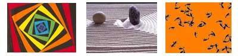

|
Image and Text, page 2
Thematically, The Ballad is about unrequited love between Sand and Soot; at another level, it is about the art of navigation through multiple discourses that constitute human experience. In some ways, it also alludes to the computer-generated electronic spaces and humans who interact with these spaces. The sophisticated conception and design of this hypermedia work brings together a variety of discourses from art, science, mathematics, philosophy, and even mythology to create a weave of texts. In spite of the centrality of the ballad in this hypermedia work, Strickland is listed as one of the seventeen contributors of the work. Even the act of transferring the poem to the web environment is unbundled in that the title screen states that the poem text is by Strickland, the design of the hypermedia work is in collaboration with Janet Holmes and the implementation to the web is by Janet Holmes. The authorship is thus diffused and distributed at various levels, even as the decentered center of the work continues to be the ballad. The hypermedia format allows Strickland and Holmes to design the work in such a way that the verses on each screen are linked to other verses in the ballad through three links per screen. The link is either through the image or through words in the text of the poem. Strickland employs the form of the ballad, which is the earliest form of literature connected to communal gatherings or dance, and the work itself has been conceptualized as a dance. While commenting on the creation of The Ballad in the essay "Seven Reasons," she says:
The aim of the hypermedia work thus is to present a very integrated piece that brings together different discourses in seemingly coherent fashion, while providing sufficient openings, so readers can relate to it from many different perspectives. The narrative coherence is reflected in the selection of images as well as carefully thought-out links in the text. The navigational paths provided enlighten rather than frustrate, since readers can choose between a complete reading, random reading or a link-based reading. 
The relationship between the verses and the images is revealing. Strickland's ballad assumes the form of a thread that passes in and out of the images that constitute the nodes of the ballad. Thus, there is a very intimate relationship between the images and the text of the poem. It is sometimes hard to distinguish if the verses were written to weave together the images or the images sought out to hold the ballad together as a coherent piece. The images don't represent what is stated in the verses; rather the images express visually the forces and relations embodied in the verses. Labeling the images as merely the background or the context of the ballad is not accurate, as there is a continuous interpenetration of the foreground and the background and the text and the image. The verses are cryptic, almost idiomatic, so that the reader has to go back and forth between the verses and the images to arrive at various readings. In an attempt to have the media reflect on itself, the binary coding, the technological basis of all electronic productions, has been turned into a literary device to frame the verses on each screen. The verses about Sand appear under 0s and those under Soot are under 1s, though in a few verses the numbering is intermixed to illustrate the interpenetration of two realms encoded by Sand and Soot. Each screen reflects a juxtaposition of two voices/two modes of being and becoming: the male and the female; the silicon-based entities/the carbon-based entities; the world of vectors and dimensions/the world of concrete materiality; the world of dreams/the world of reality; the world of flow/the world of rest; mother-child pod/mother and child as two separate entities. Certain words or sections of the verses are color-coded to reveal connections between words or parts of the verses listed under 0s and 1s, though no set formula is used for color-coding the words. The function of the image on each screen is then to point towards a space that goes beyond dualities of all kinds or which marks a space of co-existence or dynamic relationship between what is represented by the 0s and the 1s in the poem. The images of the art works, which in their original form appeared as kinetic light sculptures, kinetic sand etchings, quilt wall hangings, webcam art photos, or photographic images, serve to translate discourses from mathematics, science, and art into visual metaphors. The text and image on each individual screen are linked to other textual and visual elements of the ballad in a hypertextual collage. In the instructions stated under the section "how?" the reader is provided with three choices to read the work: a random reading by clicking zeroes in the navigational bar, reading through linkages, and complete reading through clicking images on each screen. Another way to read the hypermedia work is through the Coda section, which lists the images. A short statement about the contributors accompanies each image or set of images. Also, a link to the website of contributors is provided. Clicking the images of the Coda section takes the reader back into the poem whereas the URL given under each contributor statement allows the reader to explore the images in their original context in greater detail. The Coda reading is totally different from the first three readings that give primacy to the poem. Even though the author/s state that the Coda pieces illuminate the ballad's "theme of the passionate relation between silicon- and carbon-based life," these pieces actually do more than that. The Coda pieces bring to the forefront the multiple discourses that shape the poetic sensibility reflected in the poem. The images in the Coda section assume the form of a hyperlinked digital quilt sewn together by the verses of the ballad. The Coda reading allows the reader to go beyond the literal meaning of the poem to the level that deals with forces, vectors and dimensions of human experience. The visual presentation of metaphors unique to various discourses of art, poetry, science and mathematics allows crossing the boundary that separates them from one another. If the reader takes the Coda pieces as the starting point of the reading and hops from images to verses and back to images, a shifting and changing narrative emerges that refuses to be congealed into a single perspective or a single meaning; instead it spills out in multiple directions. The center of the hypermedia is thus nowhere and yet it is everywhere. Although a variety of images are used in The Ballad, those from Ho, a collaboration between Jean-Pierre Hébert and Bruce Shapiro, are central to its conceptualization. The Ho works included are digital sand etchings from the Sisyphus project. The creators of Ho images describe their work as "an interactive happening for the beholder" and a "transient piece, a piece as well as a medium." The title page of the ballad depicts Swheel (Small) from the Western Gallery of the Sisyphus website, tinted by Janet Holmes. The Swheel is the image of a sand etching, a heptagon with fractal overlapping images of the pattern traced by the Sisyphus ball. The credits page has another image Detail of "Swheel" which depicts an enlarged corner of the heptagon with the ball. As I mouse over the second screen, the part of the screen that takes me to the poem is the image of the ball of the Sisyphus computer-controlled device used to trace patterns in Ho's kinetic sand etchings. The track ball of my computer and the Sisyphus ball used to trace the sand etchings become one in my clicking; my computer trackball taking the place of the Sisyphus' ball as I embark on tracing a pattern in the hypermedia work. >>
|